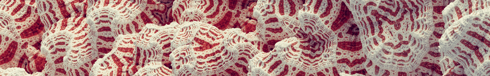

Start · UI Reference · Node Reference

I believe that scientific knowledge has fractal properties; that no matter how much we learn, whatever is left, however small it may seem, is just as infinitely complex as the whole was to start with. That, I think, is the secret of the Universe.
-- Isaac Asimov
Kaleo2 is a fractal rendering toy with two main tasks: - It allows you to explore a small but diverse group of fractals, the kaleidoscopic iterated function system fractals. - You can render high-quality photorealistic images and videos of these fractals with the built-in path tracer.
The motivation for creating this app was the fact that there are very few images of fractals on the internet that have been made with modern photorealistic renderers. Standard 3d rendering programs don't really support these exotic objects either. I hope it is relatively easy to use, I tried to simplify the settings as much as possible so that you can render unique 4K background images.
Fractals are geometric shapes characterized by their intricate patterns and self-similarity across different scales. They possess a fractional dimension, making them complex entities with fascinating properties. The concept of fractals is not limited to mathematics; it is also prevalent in nature. Examples include the romanesco broccoli or fern leaf, where the intricate structures exhibit self-repeating patterns resembling fractal geometry.
One notable variation of fractals is the Kaleidoscopic IFS (Iterated Function System) Fractal. With this method, a wide range of classic shapes, such as the Menger Sponge, can be generated. The operation of this fractal variation can be envisioned as folding and mirroring the structure of space itself by series of affine transformations (translation, rotation, scaling), resulting in mesmerizing and intricate patterns reminiscent of kaleidoscope images in three dimensions. These transformations, including folding and mirroring, are recursively applied, further enriching the complexity and detail of the resulting fractal patterns.